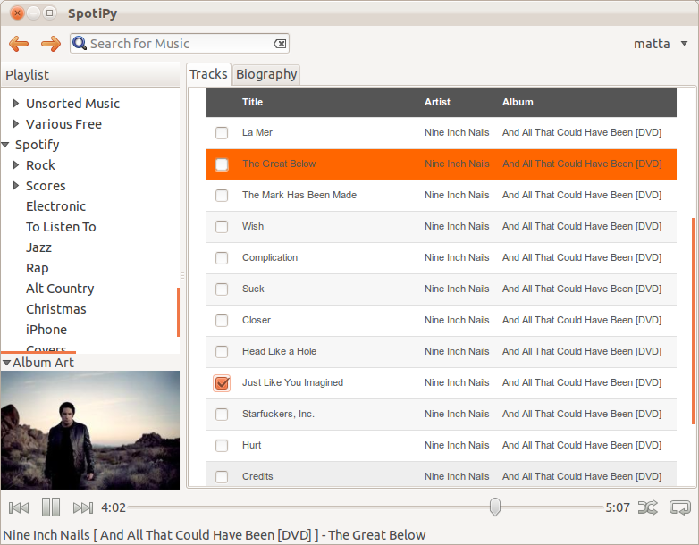
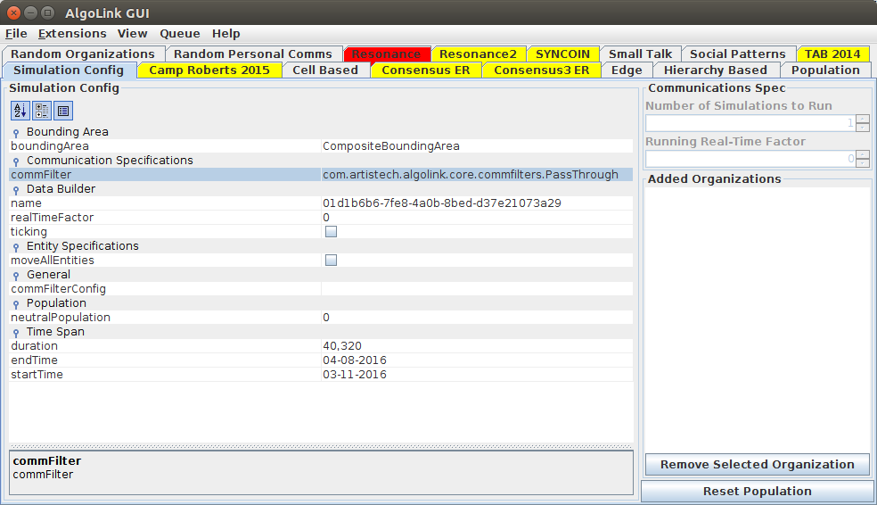

Meta-site for Matthew Aguirre. There's not much going on here but pointers to projects and other sites.
SpotiPy
Spotipy is a music player that plays spotify and local files. This project was created to provide playback of local files other than mp3 in spotify (FLAC). This project uses gstreamer so any file type with the appropriate plugin should work. Work on this project is halted due to no longer having a spotify subscription, but the local file playback functionality has recently been updated and is functional (to varying definitions of functional).

--
Matt
l2fprod-properties-editor
l2fprod-properties-editor is a Java Swing component for editing Bean properties similar to .NET's property editor component. This component is available to download through maven as well.

--
Matt
Torgo
Torgo is a Logo interpreter written in Java using ANTLR as a parsing backend.
--
Matt